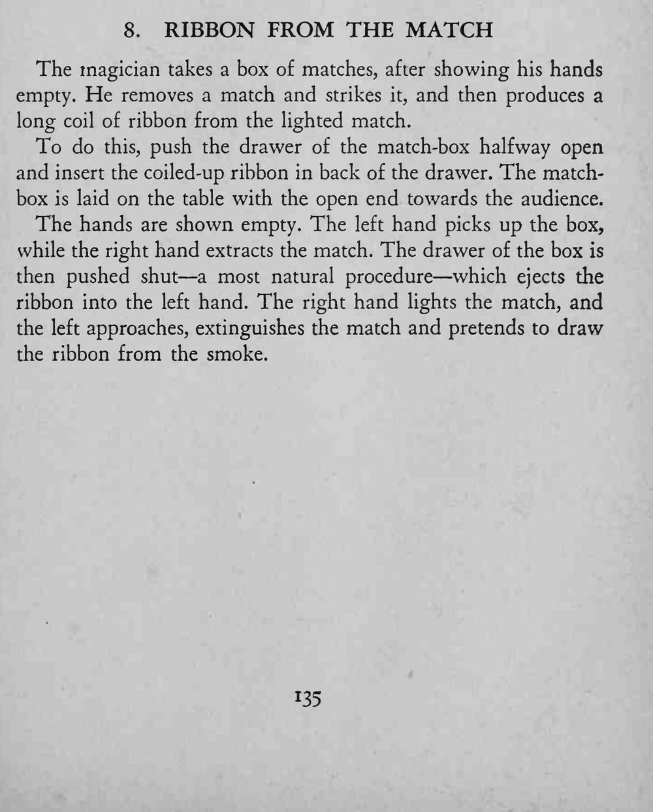
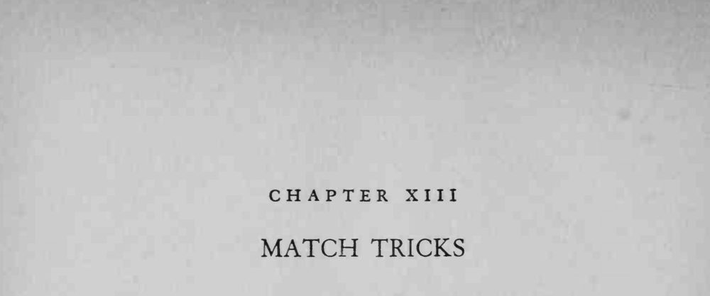

魔术师展示空手，取出一根火柴划燃，竟从燃烧的火柴里拉出一长卷丝带。
丝带要卷紧、藏稳，推内屉的动作要自然得像随手关盒。


The magician takes a box of matches, after showing his hands empty. He removes a match and strikes it, and then produces a long coil of ribbon from the lighted match. To do this, push the drawer of the match-box halfway open and insert the coiled-up ribbon in back of the drawer. The matchbox is laid on the table with the open end towards the audience. The hands are shown empty. The left hand picks up the box, while the right hand extracts the match. The drawer of the box is then pushed shut a most natural procedure which ejects the ribbon into the left hand. The right hand lights the match, and the left approaches, extinguishes the match and pretends to draw the ribbon from the smoke.